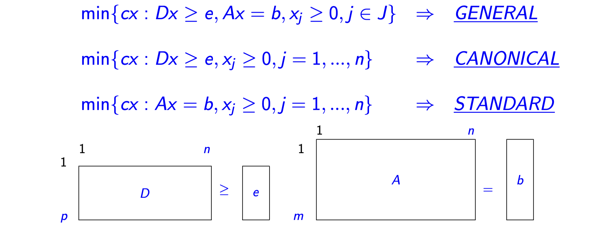
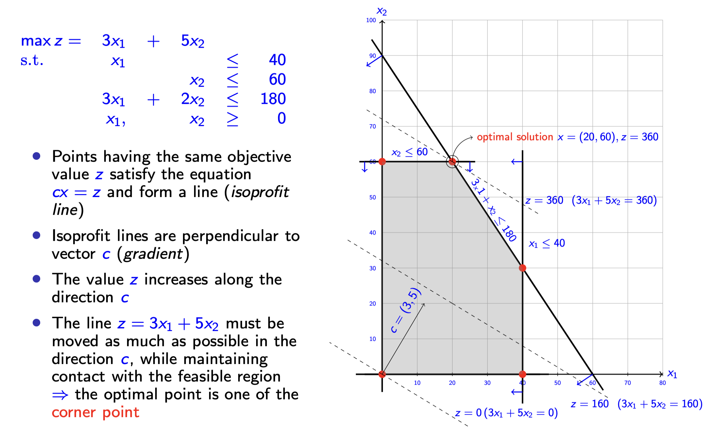
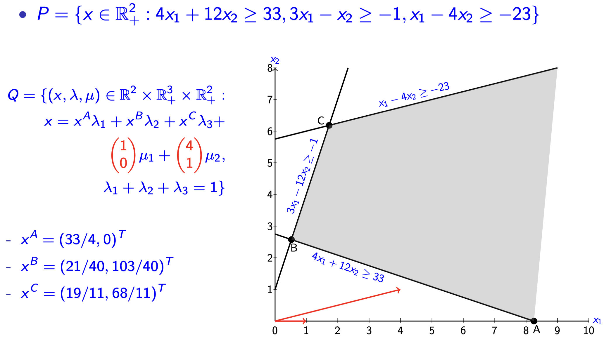
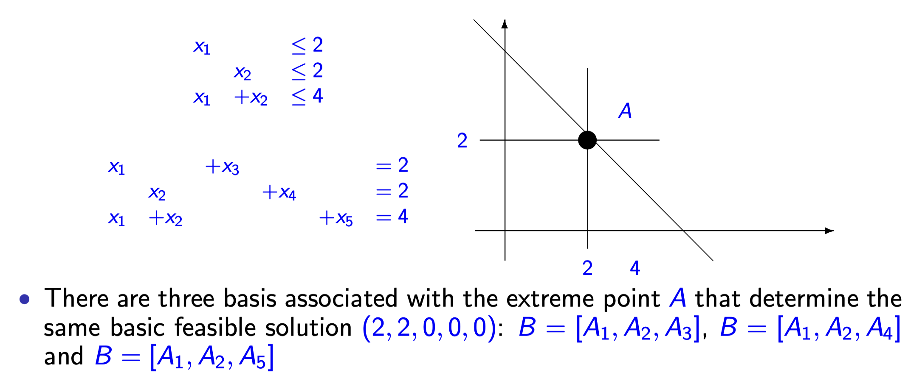
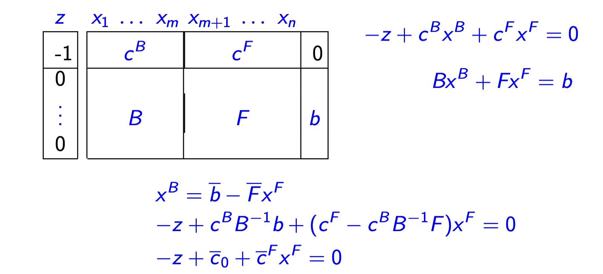
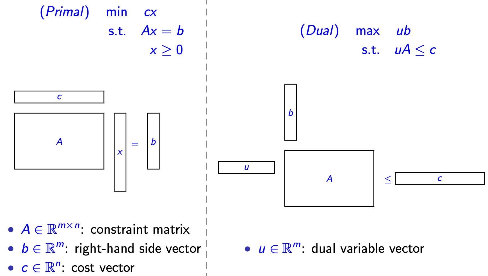
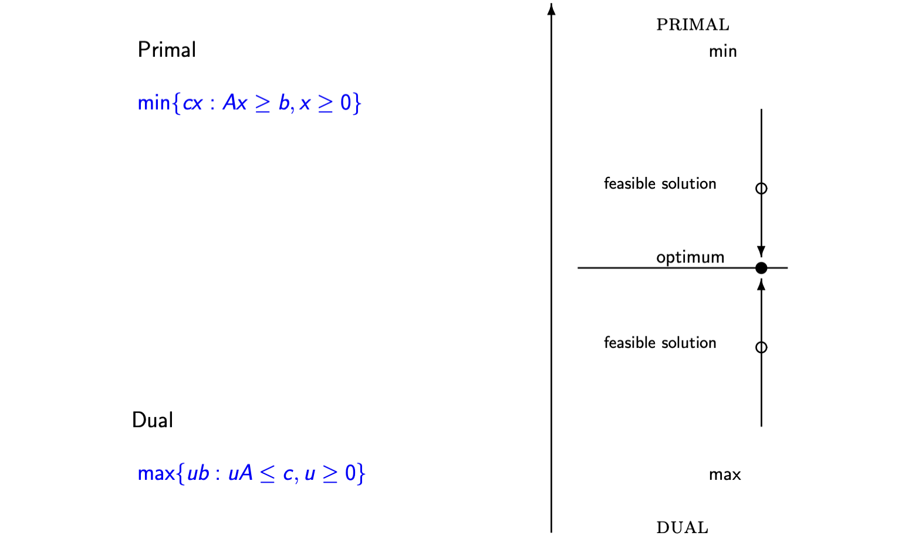

离散优化 Ch_03：线性规划基础与进阶¶
1. 线性规划问题¶
1.1 问题定义与矩阵形式¶
线性规划（LP）问题旨在最小化（或最大化）一个线性目标函数，同时满足一组线性约束。
矩阵形式（Standard Matrix Form）：
关键术语（Key Terminology）：
- \(A \in \mathbb{R}^{m \times n}\)：约束矩阵（constraint matrix）
- \(b \in \mathbb{R}^m\)：右端向量（right-hand side vector）
- \(c \in \mathbb{R}^n\)：成本向量（cost vector）
- 可行解（Feasible solution）：满足 \(x \geq 0\) 且 \(Ax \geq b\) 的向量 \(x\)
- 可行域（Feasible region）：所有可行解的集合
- 最优解（Optimal solution）：满足 \(cx^* \leq cx\) 对所有可行解 \(x\) 都成立的 \(x^*\)
- 最优成本（Optimal cost）：\(cx^*\)
1.2 标准形式与规范形式¶
LP问题可表达为三种等价形式：
| 形式 | 数学表达 | 说明 |
|---|---|---|
| 一般形式（General） | \(\min \{c x: D x \geq e, A x = b, x_j \geq 0, j \in J\}\) | 混合约束 |
| 规范形式（Canonical） | \(\min \{c x: D x \geq e, x_j \geq 0, j = 1, \dots, n\}\) | 仅不等式约束 |
| 标准形式（Standard） | \(\min \{c x: A x = b, x_j \geq 0, j = 1, \dots, n\}\) | 等式约束，非负变量 |

2. 几何视角下的LP求解（Geometric Solution）¶
2.1 可行域的几何特征¶
- 半空间（Halfspace）：每个约束定义的区域，包含所有满足该约束的 \(x \in \mathbb{R}^n\)
- 可行域（Feasible region）：所有半空间的交集
- 角点（Corner points）：与约束方程关联的顶点
示意图见 2.2 的图。
2.2 等利润线与最优解¶
- 等利润线（Isoprofit line）：满足 \(cx = z\) 的点集，形成一条直线，垂直于梯度向量 \(c\)
- \(z\) 的值沿 \(c\) 方向增加
- 关键结论：最优解必定位于可行域的某个角点（corner point）上
- 通过沿 \(c\) 方向尽可能移动等利润线，同时保持与可行域接触，直至达到最远角点

- 展示从 \(z=0\) 到最优解 \(z=360\) 的等利润线移动过程
2.3 解的可能情况¶
求解LP问题时可能出现的四种情况：
- 唯一最优解（Unique optimal solution）：发生在极点（extreme point）
- 多重最优解（Alternative optimal solutions）：目标函数与某条边界平行
- 无界最优值（Unbounded optimal objective value）：可行域无界且目标函数可无限优化
- 空可行域（Empty feasible region）：约束相互矛盾
3. 线性代数基础（Linear Algebra）¶
3.1 向量空间与矩阵¶
- \(n\)维欧几里得空间（\(n\)-dimensional Euclidean space）：记作 \(\mathbb{R}^n\)，所有 \(n\) 维向量的集合
- 线性组合（Linear combination）：\(y = \sum_{j=1}^{k} \lambda_i x^i\)，其中 \(\lambda_i \in \mathbb{R}\)
- 子空间（Subspace）：若 \(x^1, x^2 \in S\)，则它们的任意线性组合也属于 \(S\)
- 线性无关（Linearly independent）：\(\sum_{i=1}^{k} \lambda_i x^i = 0\) 的唯一解是 \(\lambda_i = 0\)
- 张成（Span）：若 \(\mathbb{R}^n\) 中任意向量都可表示为 \(x^1, \dots, x^k\) 的线性组合，则称这些向量张成 \(\mathbb{R}^n\)
- 基（Basis）：张成 \(\mathbb{R}^n\) 的线性无关向量组
3.2 矩阵的秩与线性方程组¶
对于 \(m \times n\) 矩阵 \(A\)：
- 行秩（Row rank）：\(A\) 中线性无关行的最大数量
- 列秩（Column rank）：\(A\) 中线性无关列的最大数量
- 秩（Rank）：\(\operatorname{rank}(A) =\) 行秩 \(=\) 列秩 \(\leq \min\{n, m\}\)
- 满秩（Full rank）：若 \(\operatorname{rank}(A) = \min\{n, m\}\)
- 逆矩阵（Inverse）：若 \(B\) 满足 \(AB = I\) 且 \(BA = I\)，则 \(B\) 是 \(A\) 的逆（\(A\) 非奇异/nonsingular）
- 奇异矩阵（Singular）：没有逆矩阵的方阵（行/列线性相关）
线性方程组 \(Ax = b\) 的解：
- 增广矩阵 \((A, b)\) 的秩 \(>\) \(\operatorname{rank}(A)\)：无解
- \(\operatorname{Rank}(A, b) = \operatorname{rank}(A) = k = n\)：唯一解
- \(\operatorname{Rank}(A, b) = \operatorname{rank}(A) = k < n\)：无穷多解
4. 线性规划的几何理论（The Geometry of LP）¶
4.1 凸集与多面体¶
- 凸集（Convex set）：集合 \(X\) 中任意两点 \(x^1, x^2\) 的凸组合 \(\lambda x^1 + (1-\lambda)x^2\)（\(\lambda \in [0,1]\)）仍在 \(X\) 中
- 严格凸组合（Strict convex combination）：\(\lambda \in (0,1)\)
- 极点（Extreme point）：不能表示为 \(X\) 中两个不同点的严格凸组合的点
- 超平面（Hyperplane）：\(H = \{x : px = k\}\)，其中 \(p \neq 0\)
- 半空间（Half-space）：\(\{x : px \geq k\}\)
多面体（Polyhedron）：
- 有限个半空间的交集，是凸集（Proposition 1）
- \(P = \{x \in \mathbb{R}^n : Ax \leq b\}\)
- 多胞体（Polytope）：有界的多面体，存在 \(w \in \mathbb{R}_+^1\) 使得 \(P \subseteq \{x : -w \leq x_j \leq w\}\)
锥（Cone）：
- \(C \subseteq \mathbb{R}^n\) 是锥如果 \(x \in C \Rightarrow \lambda x \in C\) 对所有 \(\lambda \in \mathbb{R}^1\) 成立
- Proposition 2：多面体 \(\{x \in \mathbb{R}^n : Ax \leq 0\}\) 是一个锥
4.2 方向与极方向¶
- 方向（Direction）：非零向量 \(d\)，使得从集合中任一点 \(x^0\) 出发，沿 \(d\) 方向无限延伸 \(\{x^0 + \lambda d : \lambda \geq 0\}\) 仍在集合内
- 极方向（Extreme direction）：不能表示为两个不同方向的正组合的方向
- 有界集合没有方向
4.3 表示定理（Representation Theorem）¶
Theorem 1：设 \(X = \{x : Ax \leq b, x \geq 0\}\) 是非空多面体集。
- 极点集：非空且有限，记为 \(x^1, x^2, \ldots, x^k\)
- 极方向集：\(X\) 有界时为空；无界时非空且有限，记为 \(d^1, d^2, \ldots, d^l\)
- 表示：\(\bar{x} \in X\) 当且仅当可表示为：

展示二维空间中点表示为极点凸组合加极方向线性组合
4.4 极点的代数刻画：基本可行解¶
考虑标准形式 \(\min \{cx : Ax = b, x \geq 0\}\)，其中 \(m \leq n\)，\(\operatorname{rank}(A) = m\)。
- 基（Basis）：\(A\) 中 \(m\) 个线性无关列的集合 \(B\)
- 基矩阵（Basis Matrix）：\(B\)（\(m \times m\) 可逆子矩阵）
- 基变量（Basic variables）：\(x^B\)（与 \(B\) 关联的变量）
- 非基变量（Non-basic variables）：\(x^F\)（其余变量，设为0）
基本解（Basic solution）：
- 基本可行解（Basic feasible solution）：若 \(x^B = B^{-1}b \geq 0\)
- 退化（Degenerate）：若 \(x^B\) 有一个或多个分量为0，此时一个极点可能对应多个不同的基

在点 \((2,2)\) 处三条约束相交，导致同一极点对应三个不同基。这个案例中出现这个情况是因为第三条约束实际上是无效的（因为前两个约束已经保证了这一点）。
4.5 极点与基本可行解的对应关系¶
Theorem 4：极点集合与基本可行解集合一一对应（均非空当且仅当可行域非空）。
Theorem 5：
- 每个极点到少对应一个基，每个基对应唯一一个极点
- 若一个极点对应多个基，则该极点是退化的（反之不必然）
关键结论：寻找最优解只需检查基本可行解（极点），其数量不超过 \(\binom{n}{m}\)。
5. 单纯形法（The Simplex Method）¶
如果基变量、基矩阵和检验数的符号还不直观，可先看从数值例子理解基与检验数：先手算两个方程与换基，再回到本节的矩阵表达。
5.1 简约成本（Reduced Cost）与最优性条件¶
将 \(A\) 分为基矩阵 \(B\) 和非基矩阵 \(F\)，相应 \(c = [c^B, c^F]\)，\(x = [x^B, x^F]\)。
约束表达式：
目标函数重写：
简约成本向量（Reduced cost vector）：
Theorem 6（最优性条件）：若 \(\bar{c} \geq 0\)，则当前基本可行解是最优解。
证明概要：对任意可行解 \(x\)，\(cx = c^B B^{-1}b + \bar{c}^F x^F \geq c^B B^{-1}b\)（因 \(\bar{c}^F \geq 0, x^F \geq 0\)）。
5.2 基变换（Pivoting）与最小比值规则¶
若存在非基变量 \(x_h\) 使 \(\bar{c}_h < 0\)，则可改进当前解：
入基变量（Entering variable）：选择 \(\bar{c}_h < 0\) 的 \(x_h\)（通常选最负者，Dantzig规则）
约束变化：
最小比值规则（Minimum Ratio Rule）：
- 若 \(\bar{a}_{ih} \leq 0\) 对所有 \(i\)，则 \(x_h\) 可无限增大，目标函数无界 \(\Rightarrow\) 问题无界（Unbounded）
- 若 \(\bar{a}_{ih} > 0\)，则 \(x_h\) 增大时基变量 \(x_{[i]}\) 减小
出基变量（Leaving variable）：达到最小比值的行 \(r\) 对应的基变量 \(x_{[r]}\) 离开基，设为零。
转轴（Pivot）：\(x_h\) 入基（取正值 \(\vartheta\)），\(x_{[r]}\) 出基（置零），得到新的基本可行解。
相邻基本可行解（Adjacent basic feasible solutions）：两解的基变量集合有 \(m-1\) 个相同变量。
5.3 单纯形算法流程¶
转轴规则（Pivot Rules）：
- Dantzig规则：选择目标函数行中成本系数最大的负值（即最负的 \(\bar{c}_h\)）
- First eligible：选择第一个符合条件的非基变量
- Hybrid规则：在前 \(K\) 个检查变量中选择成本系数最负者
收敛性：无退化时，目标函数严格递减，算法在有限步内终止（因基本可行解数量有限）。
5.4 单纯形表格式（Tableau Format）¶

表的结构：
- 基变量 \(x^B = \bar{b} - \bar{F}x^F\)
- 目标函数行：\(-z + \bar{c}_0 + \bar{c}^F x^F = 0\)，其中 \(\bar{c}_0 = c^B B^{-1}b\)
转轴操作（Pivot Operation）：
6. 线性规划中的对偶性（Duality in LP）¶
6.1 对偶问题的构造¶
原问题（Primal）：
对偶问题（Dual）：
其中 \(u \in \mathbb{R}^m\) 为对偶变量向量。

- 展示原问题（列向量 \(x\)，等式约束）与对偶问题（行向量 \(u\)，不等式约束 \(\leq\)）的结构对比
对偶关系表：
| 原问题（min） | 对偶问题（max） |
|---|---|
| \(a_i x \geq b_i\) | \(u_i \geq 0\) |
| \(a_i x \leq b_i\) | \(u_i \leq 0\) |
| \(a_i x = b_i\) | \(u_i\) 自由（free） |
| \(x_j \geq 0\) | \(uA_j \leq c_j\) |
| \(x_j \leq 0\) | \(uA_j \geq c_j\) |
| \(x_j\) 自由 | \(uA_j = c_j\) |
6.2 Farkas引理与对偶理论¶
有效不等式（Valid inequality）：不等式 \(cx \geq c_0\) 对集合 \(X\) 有效，若对所有 \(x \in X\) 成立。
Theorem 7（Farkas引理）：不等式 \(c_0 \leq cx\) 对非空多面体 \(P = \{Ax = b, x \geq 0\}\) 有效，当且仅当存在 \(u \in \mathbb{R}^m\) 使得：
推导对偶：
6.3 弱对偶性与强对偶性¶
Lemma 1（弱对偶性 / Weak Duality）： 若 \(\tilde{x} \geq 0\) 是原问题可行解，\(\tilde{u}\) 是对偶问题可行解，则：
证明：\(A\tilde{x} = b \Rightarrow \tilde{u}A\tilde{x} = \tilde{u}b\)，由 \(c \geq \tilde{u}A\) 得 \(c\tilde{x} \geq \tilde{u}A\tilde{x} = \tilde{u}b\)。

- 展示原问题（min）目标值在下，对偶问题（max）目标值在上，最优值在中间相遇
Corollary 1：
- 原问题和对偶问题都有有限最优解
- 原问题无界 \(\Rightarrow\) 对偶问题无可行解
- 对偶问题无界 \(\Rightarrow\) 原问题无可行解
- 两问题均无可行解（可能同时发生）
Lemma 2（强对偶性 / Strong Duality）： 若原问题或对偶问题之一存在最优解，则两问题都存在最优解且最优目标值相等。
6.4 互补松弛性（Complementary Slackness）¶
对于原问题-对偶问题对 \(\min\{cx : Ax \geq b, x \geq 0\}\) 和 \(\max\{ub : uA \leq c, u \geq 0\}\)：
解 \(x\) 和 \(u\) 分别为最优解当且仅当满足：
- (a) \(Ax \geq b, x \geq 0\) （原可行性）
- (b) \(uA \leq c, u \geq 0\) （对偶可行性）
- (c) \(cx = ub\) （目标值相等）
由 (a)(b) 可得互补松弛条件：
展开为分量形式（\(A_i\) 为 \(A\) 的第 \(i\) 列，\(a^i\) 为第 \(i\) 行）：
经济学解释：
- 若 \(c_j - uA_j > 0\)（对偶约束不紧），则 \(x_j = 0\)（原变量为零）
- 若 \(a^i x > b_i\)（原约束不紧），则 \(u_i = 0\)（对偶变量为零）
6.5 对偶单纯形法（Dual Simplex Method）¶
从对偶角度求解的替代算法：
- 出发点：满足对偶可行性 (b) 和互补松弛性 (c)，但违反原问题非负约束 (a) 的基本解
- 过程：通过转轴操作保持 (b) 和 (c)，逐步恢复 (a)
- 应用：灵敏度分析（Sensitivity analysis）中特别有用，可高效处理参数变化
最优性条件的完整表述：
- (a), (b)：原问题与对偶可行性
- (c1) \((c - uA)x = 0\)：原始互补松弛
- (c2) \(u(Ax - b) = 0\)：对偶互补松弛
7. 参考文献（Bibliography）¶
- Bazaraa, M. S., Jarvis, J. J., and Sherali, H. F. (2010): Linear Programming and Network Flows. John Wiley & Sons, 4th edition.
- Bertsimas, D. and Tsitsiklis, J. (1997): Introduction to Linear Optimization. Athena Scientific, 1st edition.
注：文中 Theorems 1-5 分别对应参考文献 [2] 中的 Theorems 2.1, 3.2, 3.3, 3.1, 3.4。